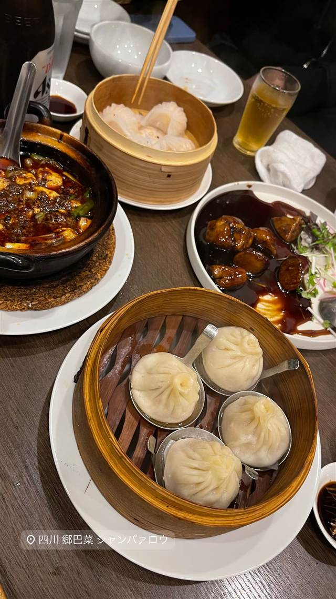

四川 郷土菜 シャンバァロウ（郷巴佬）
ミシュラン店出身の店主が作る四川の家庭料理・麻婆豆腐
四川 郷巴菜 シャンバァロウ
2020年開業の本格四川郷土料理店。ミシュラン一つ星「老四川 飄香」出身の店主が、四川の下町の家庭料理をコンセプトに、自家製調味料を使った麻婆豆腐や担々麺を提供している。
TRIVIA
へえ、という話
- 店名「郷巴佬」は中国語で「田舎者」を意味し、四川の下町の家庭料理を出すという店の姿勢を表している
- 店主はミシュラン一つ星を獲得した名店「老四川 飄香」の出身
| 創業 | 2020年5月開業（5/8プレオープン、6/5グランドオープン） |
|---|---|
| 系譜 | 店主はミシュラン一つ星を獲得した四川料理の名店「老四川 飄香」出身 |
| 看板 | 麻婆豆腐、担々麺、焼き小籠包 |
| こだわり | 自家製調味料・タレにこだわり、四川の下町・路地裏の家庭的な郷土料理を再現 |
| 予算 | 夜 ¥3,000～¥3,999 |
| 場所 | 狛江駅（南口徒歩8分） 東京都狛江市東和泉1-5-14 |
| 注意 | 狛江駅南口から徒歩8分、世田谷通りと狛江通りの交差点近く |
食べたもの：小籠包・麻婆